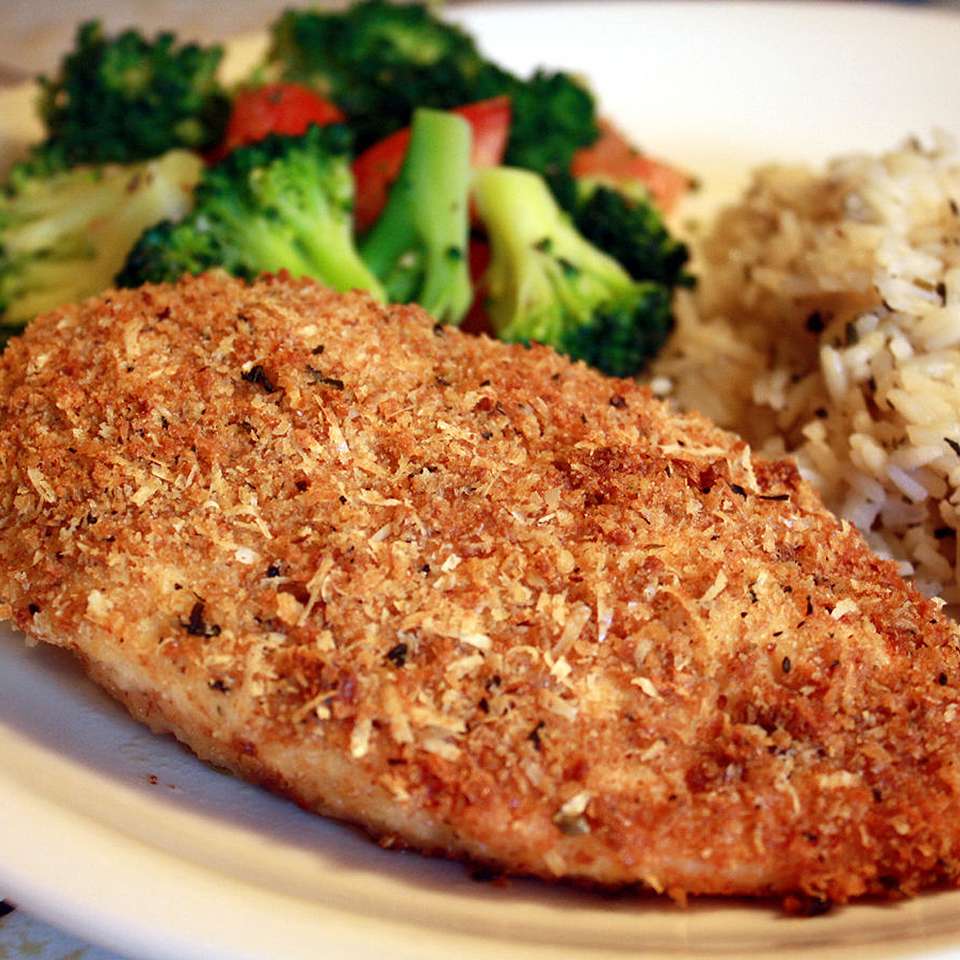

Garlic Chicken

Description
This garlic chicken is simple to make — just dip and bake.
Garlicky goodness in a breaded chicken dish. Yum!
The recipe itself isn't too difficult to follow at all and you'll have
delicious chicken ready in no time!
Ingredients
- 1/4 cup of olive oil
- 2 cloves of garlic, crushed
- 1/4 cup of italian-seasoned bread crumbs
- 1/4 cup of grated Parmesan cheese
- 4 skinless, boneless chicken breast halves
Steps
- Preheat the oven to 220 degrees C
- Heat olive oil and garlic in a small saucepan over low heat until warmed,
1 to 2 minutes. Pour into a shallow bowl.
- Combine bread crumbs and Parmesan cheese in a seperate shallow bowl
- Use tongs to dip chicken beasts in olive oil-garlic mixture, then coat evenly in bread crumb mixture.
Transfer coated Chicken to a shallow baking dish
- Bake in the preheated oven until no longer pink and juices run clear, 30 to 35 minutes.
An instant-read thermometer inserted into the center should read at least 74 degrees C.
- ENJOY!